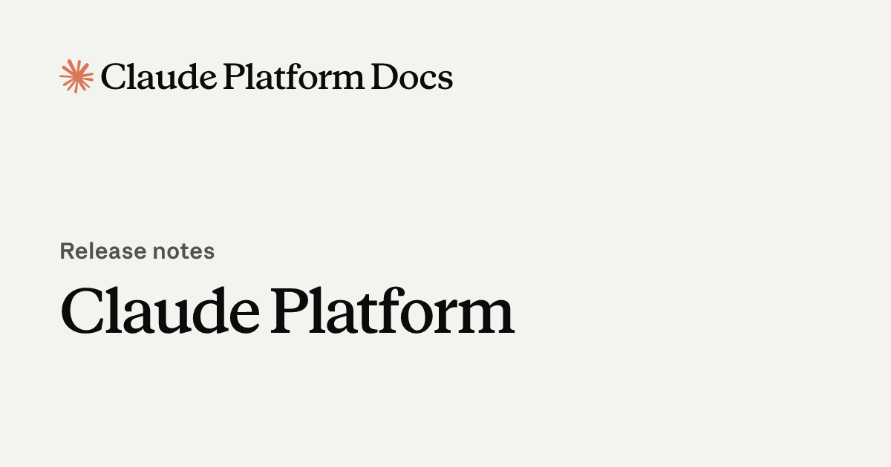
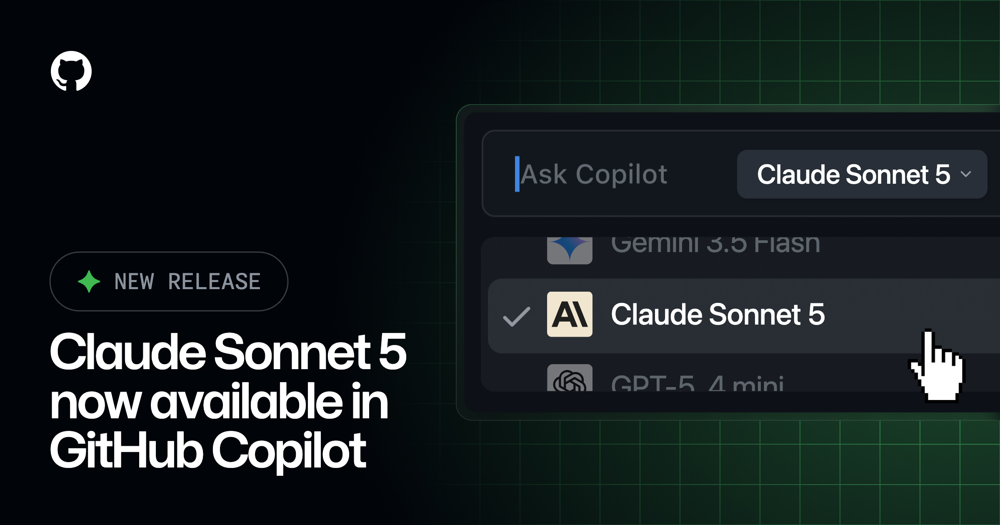
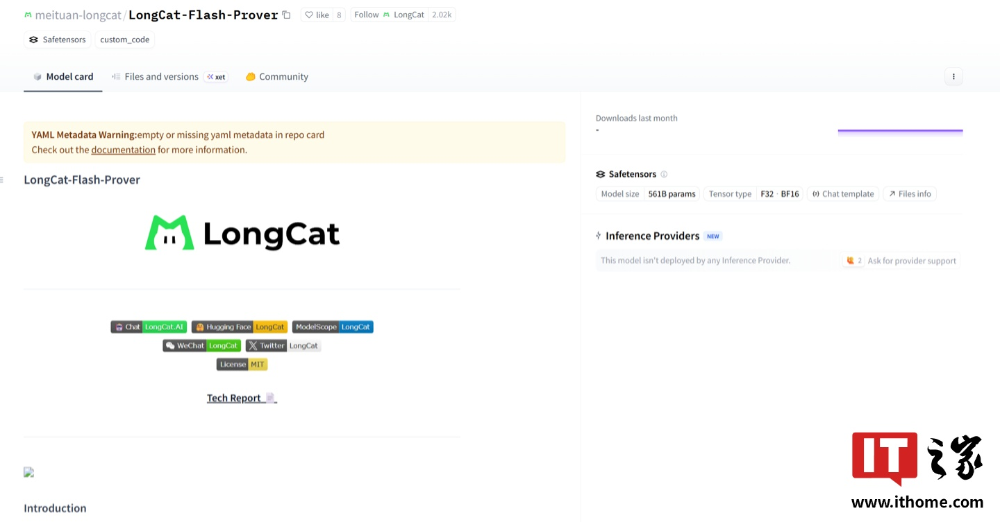
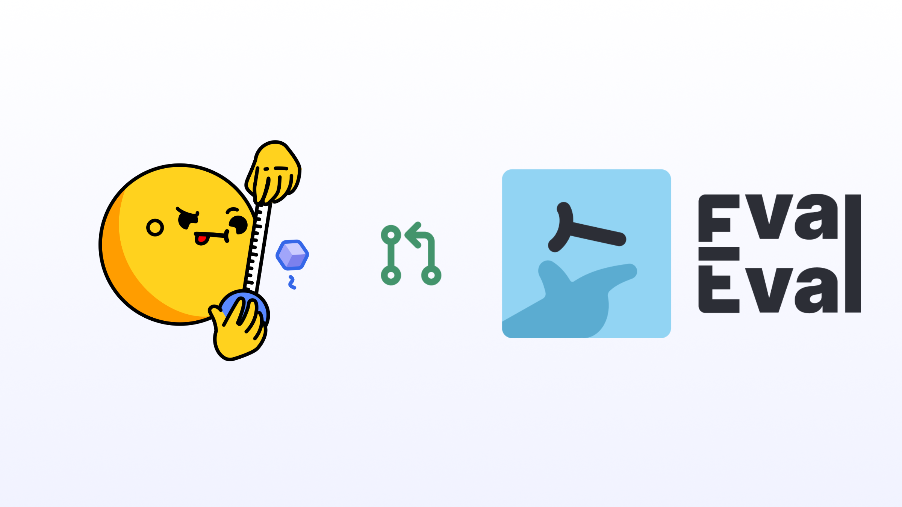
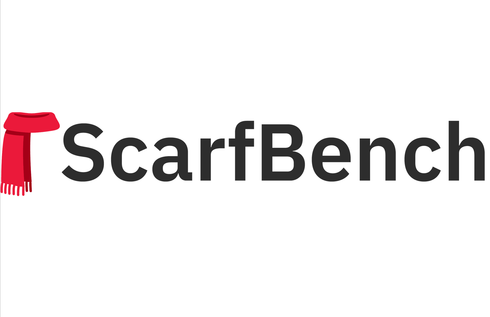
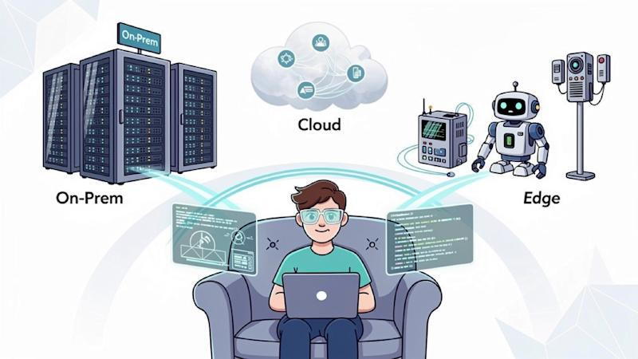
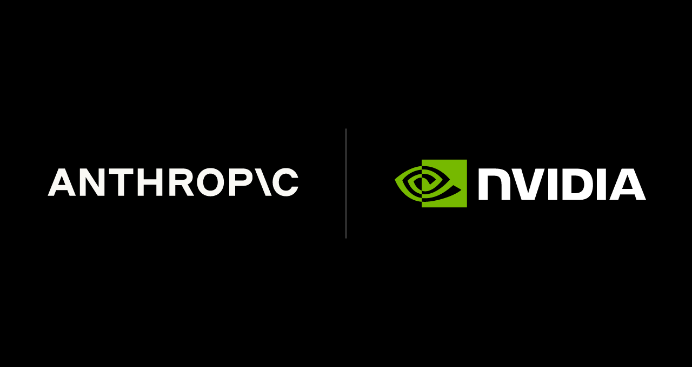
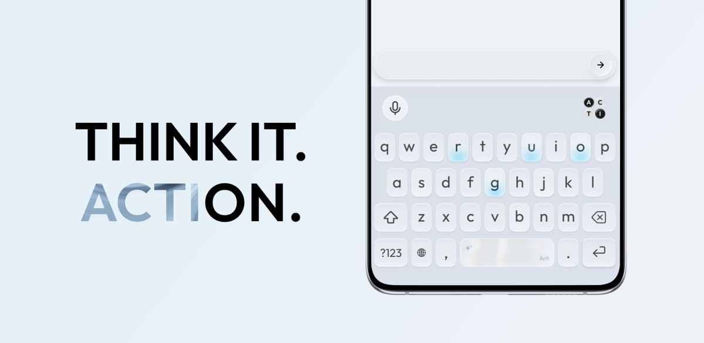

Janet 快车箱
AI Daily Briefing
2026-07-01
VOL 274
对中国创作者和企业来说，门槛正在从“会不会用 AI”变成“能不能把 AI 变成固定产能”。视频团队要盯低价高吞吐生成 API，研发团队要盯代码 Agent 的成本和评测证据，垂直行业要盯 Claude Science 这类工作台能不能把专家软件拆掉。单点工具越来越便宜，真正值钱的是把模型接进流程、权限、数据和交付。
接下来 2-4 周重点看三件事：Sonnet 5 的低价窗口会不会逼 OpenAI、Google 跟进 Agent 定价；Gemini 新媒体模型能不能把创意工具价格继续打穿；LongCat-2.0 和 ScarfBench 这类开源/评测信号能否证明 Agent 不只会 Demo，而能改老代码、跑迁移、交结果。

Anthropic 平台文档显示，Claude Sonnet 5 的模型名为 claude-sonnet-5，支持 1M token 上下文窗口和 128K max output tokens，并继承 Claude Sonnet 4.6 的主要工具与平台能力，但不支持 Priority Tier。官方把它放在更适合长程 Agent 和代码任务的价格带。

GitHub 在 6 月 30 日的 changelog 中宣布 Claude Sonnet 5 已在 Copilot 中 generally available，用户可以通过 Copilot model picker 选择该模型。Anthropic 新模型发布当天即进入主流开发者入口，说明模型分发正在跟 IDE 和代码助手深度绑定。

Google 称 Nano Banana 2 Lite 是 Nano Banana 家族中最快、最具成本效率的 Gemini Image 模型，目标是高吞吐、速度和规模化。它已经进入 Google AI Studio、Gemini API、Gemini Enterprise Agent Platform，并逐步进入 AI Mode in Search、Gemini app 等消费端入口。

LongCat-2.0 页面显示，该模型主打 1.6T MoE、1M 上下文和 Agentic coding，并以 MIT License 发布。外部报道同时提到模型权重和直接平台确认仍需要继续观察，开发者社区已经开始讨论 Cursor 等工具是否应接入该模型。

Hugging Face 6 月 30 日宣布在模型页面展示 Every Eval Ever 结果。该功能把来自评测社区的多维结果放到模型页旁边，目标是让模型选择不再只依赖单个排行榜或厂商自报成绩。

IBM Research 6 月 30 日在 Hugging Face 发布 ScarfBench，用企业 Java framework migration 任务评测 AI Agent。该基准关注真实企业迁移中的代码理解、修改、依赖处理和工程约束，不是简单刷题。

VentureBeat 6 月 30 日报道，Couchbase 推出 AI Data Plane，主打让 Agent memory 和 vector search 在边缘或本地运行，解决云端不可达、数据主权和上下文延迟问题。文章把它放在企业 AI Agent 需要随处获取 context 的背景下讨论。

NVIDIA 6 月 30 日发文称，BioNeMo Agent Toolkit 将进入 Anthropic 的 Claude Science，帮助生命科学研究者用代理工作流调用 NVIDIA BioNeMo 模型、库和加速流程。该合作把基础模型、专业生物模型和加速计算放进同一个科研工作台。

TechCrunch 6 月 30 日报道，Acti 获得 530 万美元种子轮融资，由 BITKRAFT Ventures 领投。公司把 AI Agent 放进智能手机键盘，让用户在邮件、聊天、社交和移动工作流中直接调用 Skills，并计划建设可分享的 Skills marketplace。

Etched 称其 AI 专用芯片订单达到 10 亿美元，估值升至 50 亿美元。投资逻辑很明确：当推理负载持续增长，市场会寻找比通用 GPU 更便宜、更高吞吐的专用路径。
LongCat-2.0 把 1.6T 参数、1M 上下文、Agentic coding 和国产芯片训练放在同一套叙事里。对投资人而言，这不只是模型新闻，也是中国 AI 基建、应用场景和开源分发能力的一次集中展示。

Acti 是一个智能手机键盘产品，用户可以在任意输入场景中调用 AI Skills，例如读取实时赛事信息、插入 Polymarket 链接或执行跨应用任务。公司计划让 Skills 可以私有使用，也可以进入 marketplace 分享。